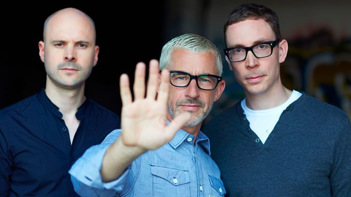

Above & Beyond talk albums: “We need each other, it’s almost like a marriage”


With Above & Beyond’s new album ‘We Are All We Need’ finally dropping this week, their fanbase around the world will already well familiar with at least a few of its polished choruses; its singles have been drip-fed to their millions-strong fanbase around the world over the past 12 months.
“We always try and make the album something that you’d listen to at home,” Jono Grant told Data Transmission, shortly before he performed on the mainstage of Vh1 Supersonic in India. “It’s influenced by club music, and also influenced by the singer-songwriter stuff, so it’ll sit somewhere in the middle. And then we do the club remixes after the album’s release.”
The UK trio have walked a fine line as a stadium trance act, with instrumental stormers like ‘Hello’ representing the more purist side of their output. However, the singer/songwriter elements have also been key to Above & Beyond’s appeal, as far back as anthems like ‘Alone Tonight’ and ‘Good For Me’, and their Oceanlab project with veteran vocalist Justine Suissa. Their strength as a songwriting team though was more apparent with their ‘Above & Beyond Acoustic’ project last year, which saw them taking their back catalogue outside a nightclub.
And the strength of the songwriting on the cast of singles on ‘We Are All We Need’ is probably stronger than ever before. When A&B played one of its most important gigs ever last October, the ‘Group Therapy 100’ party at Madison Square Garden in New York that was broadcast to tens of millions around the world, the crowd already knew the lyrics to the likes of ‘Sticky Fingers’ and ‘Blue Sky Action’ off by heart. These tunes really do resonate.
Data Transmission caught up with Above & Beyond close to where it all began for the trio; or at least, close to the enigmatic Goa beach that inspired them to name their label Anjunabeats.
“We’ve been here ten times I think. And because we named our label Anjunabeats, it was a bit of a musical pilgrimage to come here, and see what it’s actually all about. Because while we used the name, and we knew what the connotations were… it was kind of chosen as more of a vibe thing, rather than because we actually knew too much about it, to be honest. So then we wanted to sort of backtrack, and see what it’s actually like here. 2006 was the first time that we came to India. And the scene has really grown since then. But as you know, it’s so global now anyway, it’s transformed into an international scene rather than a local thing I’d say.”
How have the gigs changed over the years?
The expectations from the audience have gone up, in terms of the production. I think the trick has been to try and remember that while that’s important, actually you’re there to play music, and you should focus on the music. Dance music has become so much about the screens and the O2 cannons and everything else, but the reason why people are actually there is for the music. That other just stuff impresses the people who have only just gotten into it.
Is there something about the emotional, singer/songwriter aspect of Above & Beyond that connects naturally with Indian audiences, do you think?
The Indians are very passionate, let’s face it. When you do a gig here, it’s not like people are standing around and wondering, oh what’s this all about. They really go for it, they really let go and get into it. So I think they really like that emotive sound, they really buy into it. So it’s a good audience for us to play to for that reason. That’s what we want as well, we feed off that.
There’s been a lot of changes in dance music the past few years, but you’ve been able to evolve the core Anjuna sound so you’re one of the few trance acts still on the festival mainstages. There’s you and Armin van Buuren, but other than that…
It’s difficult, because I think that whenever we do a track, we try and give it something unique. But at the same time that alienates people along the way, because some people wish we were still making the 138BPM trance that we were making 10 years ago. But for me personally, I don’t want to make the same record over and over again. It’s interesting, because wherever people got on the Above & Beyond train, that’s what they enjoy. Some people say, “Oh their ‘Group Therapy’ stuff was better”, and some say, ”their ‘Tri-State’ stuff was better’. It depends when you got into our music really. Some people will get into this album and this sound.
For me personally, the most important thing is to find a way that we can make music that we believe in, which will translate to a crowd, but to not just end up playing music purely that you think will make people jump up and down to, or whatever you want them to do, stick their hands in the air. For me, I’m thinking of how can we put our sound forward to a festival audience, and not just be playing Beatport’s Top 10. Which I find lazy, to me that’s just boring. I couldn’t just stand up there and wave my hands around to that, because I don’t really like it. Some of the deep house tracks are great, but a lot of it is that drab Dutch sound. I respect those guys because they knock out those tracks, and they’re incredibly well produced, but it all sounds the same to me.
What strikes me about your new album ‘We Are All We Need’ is that while it has the core A&B sound in terms of the singer-songwriting, though there’s more of a club focus than the template you worked with on ‘Group Therapy’ and Oceanlab, which featured more downtempo selections that were later reworked into club remixes.
The feedback has often been that it’s really clubby. And I’ll tell you something funny, when we were making this album we were trying to make it even more downtempo than ‘Group Therapy’, though it doesn’t sound that way to you, which is really interesting [laughs]. That says a lot really, as when we’re making an album, the sound evolves as we’re doing it, rather than through a template. We hit a point were we decided that we wanted to make it more downtempo and less clubby. But we’ve actually not achieved that [laughs]. But we always try and make the album something that you’d listen to at home, which is influenced by club music, and also influenced by the singer-songwriter stuff, and sits somewhere in the middle. And then we do the club remixes afterwards. But you’re right, it does have that club sound at the same time.
Have you worked with other producers to help evolve your sound?
We’ve worked with Andrew Bayer a lot on the album. He’s a great producer, and also because we’re always travelling, it helps that he’s always there. If I come up with an idea on the road, I’ll bring it back with me and we can produce it up later. Or, some of the ideas are already developed and he’ll come in to help out. It just makes for a great way of working. He’s doing his own stuff as well, so he’s not there all of the time. But it’s great way to help have that cohesive thing… Because two of us will be away, one person might be away… it’s a mess otherwise. You come back and your kickdrum has been changed, and you’re like shit what’s happened [laughs].
He’s an amazing producer.
He’s a technical genius, and stylistically too. We’ve done some co-writes with him as well. We don’t try to hide the fact that we work with Andrew, it’s something that we’re proud of. Because he’s a great producer. If you look at the best records in history, I believe they’ve been made by a team of people. An album like Nirvana ‘Nevermind’ is an incredible piece of work, and that’s not just because of the band, it’s because of the producer, the engineer. This idea of look at me, I can do all of this myself… It is a myth. Who are you lying to? Yourself really. I couldn’t do this without Tony, Paavo… and Andrew. We all need each other, and I think that’s why we stay together. Because it’s almost like a marriage.
So what’s planned for the label next year? The album will be a big thing.
Well, we don’t plan the music. But we’re going to do obviously ‘Anjunabeats Vol. 12’, and probably a new Anjunadeep album next year as well. My brother James said to me that one is gonna be hard, because he’s really proud of the one from this year. It was amazing. I don’t have that much to do with the Deep label, so it’s great because I can big up the label without feeling like I’m bigging up myself [laughs]. So yeah, he does a great job of that with Jody [Wisternoff].
It has evolved a lot since the first compilation came out.
It’s really exciting, and it’s bizarre. We were lucky because the deep house thing picked up, but it wasn’t like we said, oh let’s do deep house because it’s going to be popular, it just so happened that it coincided. And that’s the way we run things, we don’t try and chase a sound too much. Sure, there are big records out there, and we’re going to be influenced by those records, that’s perfectly normal I think. But at the same time, when Martin Garrix releases ‘Animals’, Above & Beyond isn’t going to do a me too track, because it doesn’t make sense. If it was something that was really us, we might be more influenced by it. But sometimes those things collide. And it’s like with the deep house thing, it’s really exciting when you catch a wave in that sense. It really is like that. The deep thing, it really is great. I played a set in Madison Square Garden before the show, and I never get to play that kind of music. When people are coming to a gig like this they expect to hear certain songs from us, but having the opportunity go to and play all these records… I don’t actually have a lot to do with those records, yet I do as they’re all artists on Anjunadeep. It’s a nice place to be, I’m really proud of that label. Even though I don’t have a lot to do with it [laughs] I feel like it’s part of the Anjuna family.